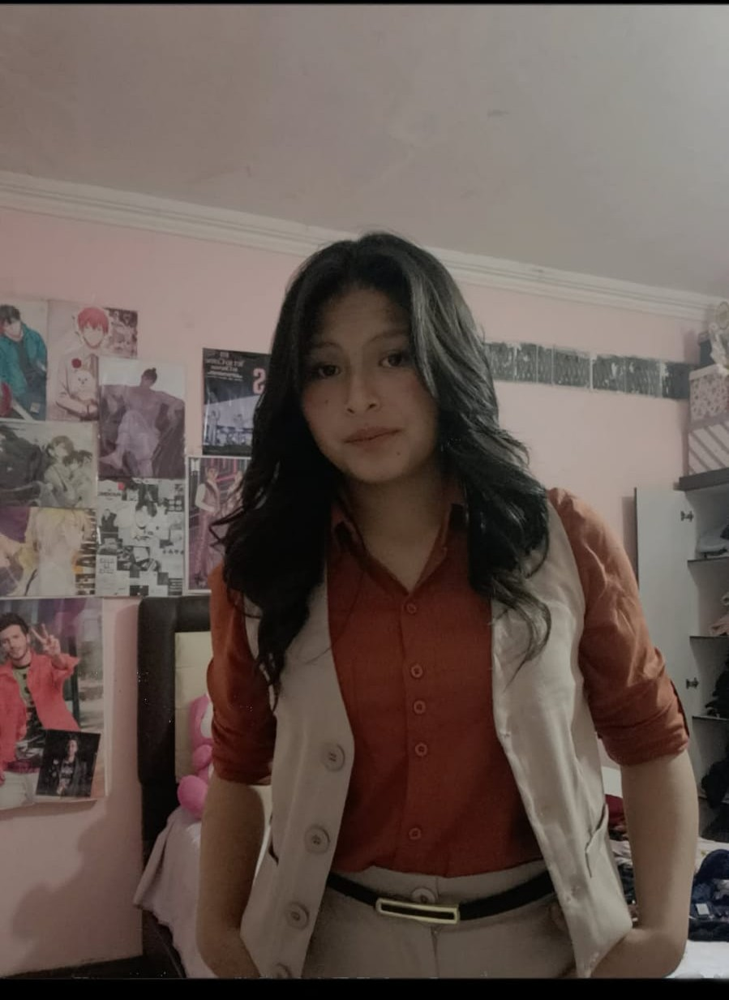

Sobre mí
"Mi curiosidad empezó con un clic derecho > inspeccionar. Hoy paso mis días mezclando lógica y diseño para que la web deje de ser aburrida."
Para mí, el desarrollo web no es llenar un archivo de texto; es resolver problemas de forma visual. Me gusta el caos de una página en blanco y el orden de un despliegue exitoso. No te voy a decir que sé todo, porque en este mundo eso es mentira. Lo que sí te aseguro es que si no sé cómo hacer algo, no paro hasta que lo domino. Soy de los que creen que el Front-end es el puente entre una gran idea y un usuario feliz, y me tomo muy en serio la construcción de ese puente.
